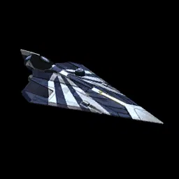
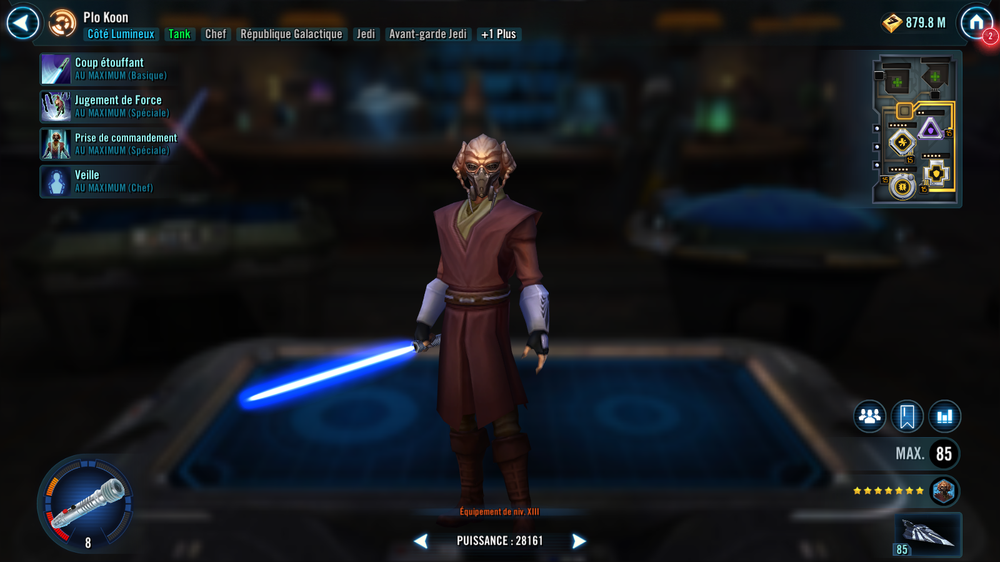
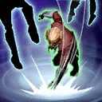

Plo Koon
Jedi Tank with Clone synergy, reliable enemy Dispel and anti-Stealth

Jedi Tank with Clone synergy, reliable enemy Dispel and anti-Stealth


Deal Physical damage to target enemy and dispel all buffs on them. If an effect is dispelled, Plo Koon gains Defense Up for 3 turns.

Deal Special damage to all enemies with a 70% chance to inflict Offense Down for 3 turns.
All allies gain Defense Up for 4 turns. Clone and Jedi allies gain 50% Turn Meter and other allies gain half that amount.
Each ally has a 55% chance to remove Stealth from each enemy at the start of their turn. If they dispel any enemies, they gain Offense Up for 1 turn.